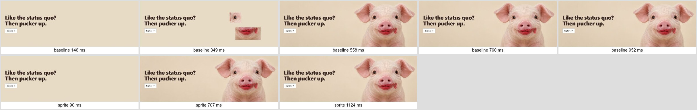
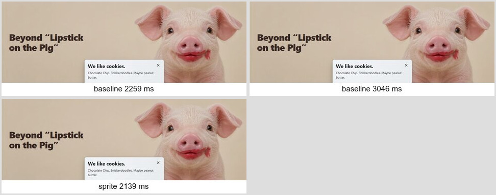
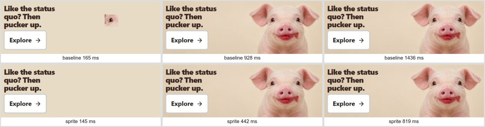
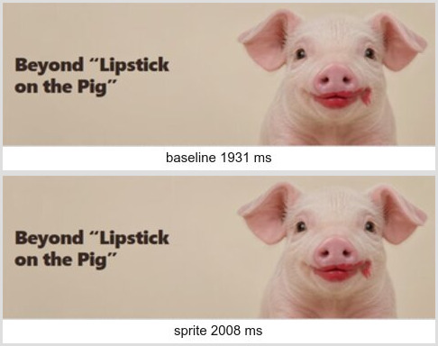
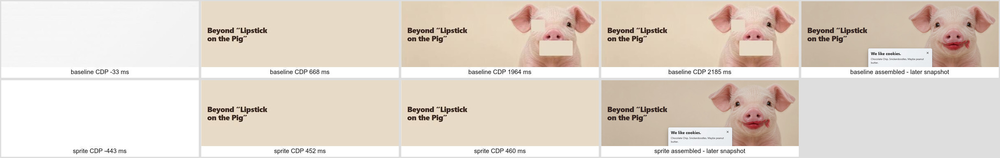
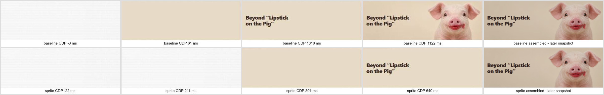

Pig slide: baseline versus atlas
Local comparison only. Top row baseline; bottom row atlas. Actual throttled browser screenshots. Click images for full resolution. Measurements, recommendation and limitations.
1440px - first carousel arrival

150ms latency, 1.6Mbps download, 4x CPU. Frames sample the transition; screenshot overhead is excluded from performance medians.1440px - direct TCC hero

150ms latency, 1.6Mbps download, 4x CPU. Frames sample the transition; screenshot overhead is excluded from performance medians.390px - first carousel arrival

150ms latency, 1.6Mbps download, 4x CPU. Frames sample the transition; screenshot overhead is excluded from performance medians.390px - direct TCC hero

150ms latency, 1.6Mbps download, 4x CPU. Frames sample the transition; screenshot overhead is excluded from performance medians.1440px - early direct-hero CDP frames

CDP sampling supplements the screenshot loop; the final assembled snapshot is later and is not assigned a fabricated presentation time.390px - early direct-hero CDP frames

CDP sampling supplements the screenshot loop; the final assembled snapshot is later and is not assigned a fabricated presentation time.